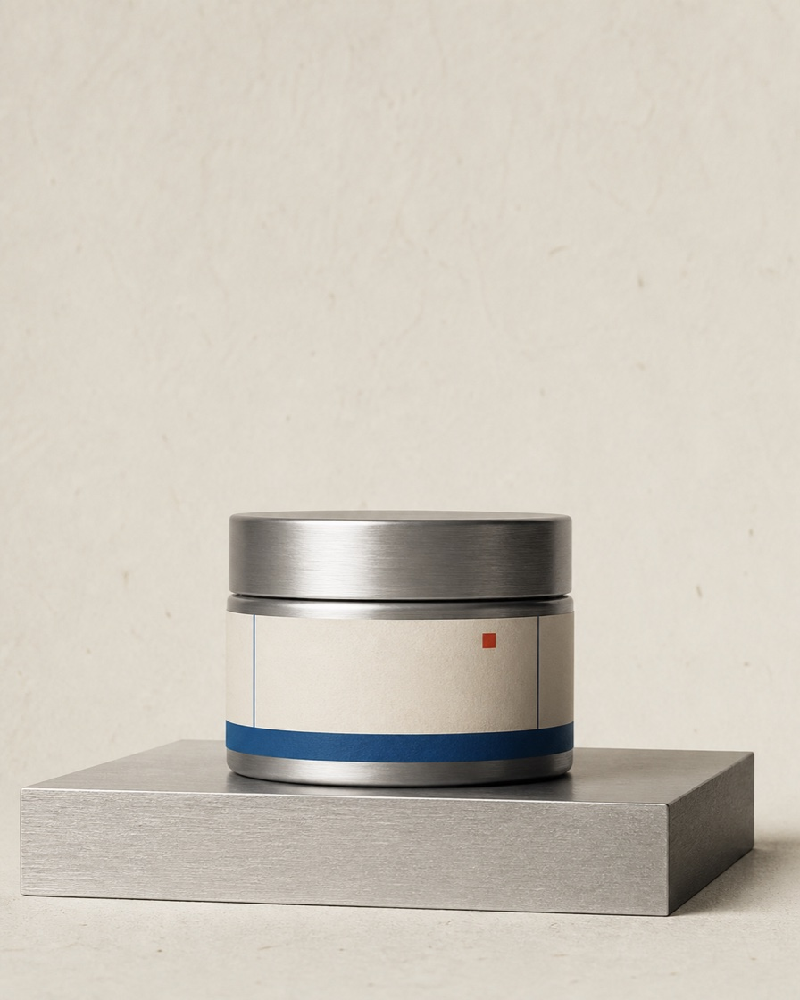
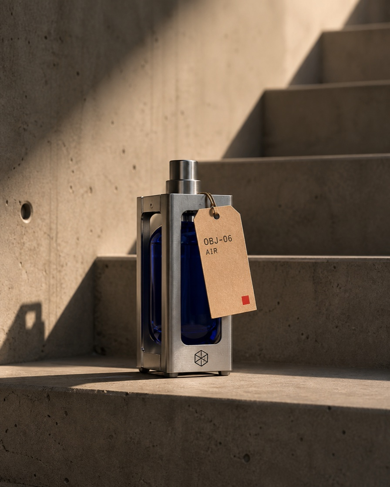
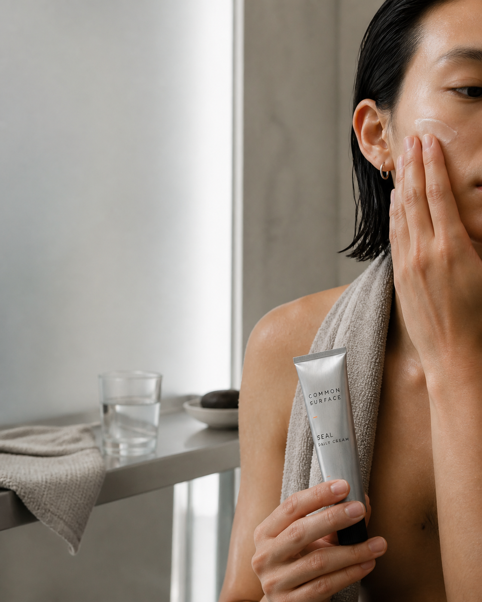

데일리 크림

관찰: 제품 역할은 이해되지만 사용자 장면이 넓고 기억점이 약합니다.
최소한의 브랜드 입력만으로도 제품과 접점에 같은 인상이 남는지 확인합니다.

| 항목 | 기준선 | 개선본 | 관찰 |
|---|---|---|---|
| 브랜드 식별성 | 6 | 8 | 상황과 명제가 하나의 기억점으로 연결됨 |
| 차별성 | 6 | 7 | 과장 없는 루틴 언어가 유지됨 |
| 메시지 명확성 | 7 | 9 | 언제 쓰는지 즉시 이해됨 |
| 제품 연결성 | 7 | 9 | 제품 역할과 장면이 일치함 |
| 접점 일관성 | 8 | 8 | 동일 Pack·토큰·CTA 유지 |
| 에셋 적합성 | 5 | 8 | 제품 컷이 실제 사용 장면과 연결됨 |
| UX 정합성 | 7 | 8 | 루틴 시작 행동이 자연스러워짐 |
| 상업 설득력 | 5 | 7 | 판매 문맥으로 확장할 구체적 기반 확보 |
| 개선 폭 | — | 8 | 단일 입력 변경으로 의미 상승 |
| 수정 부담 | — | 9 | 카피·상황 필드만 수정, 시스템 변경 없음 |

